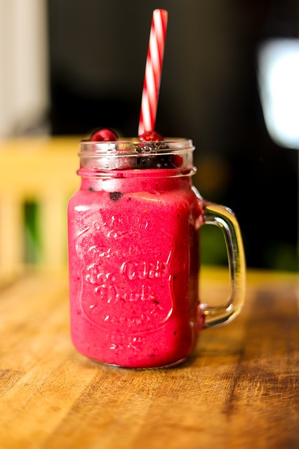

A smoothie is a thick and creamy beverage made from pureed raw fruit, vegetables, and sometimes dairy products (e.g. milk, yogurt, ice-cream or cottage cheese), typically using a blender. Smoothies may be made using other ingredients, such as water, crushed ice, fruit juice, sweeteners (e.g. honey, sugar, stevia, syrup), whey powder, plant milk, nuts, nut butter, seeds, tea, chocolate, herbal supplements, or nutritional supplements. A smoothie containing dairy products is similar to a milkshake, though the latter typically contains less fruit and often uses ice cream or frozen yogurt.
Ingredients
- 1/2 cup of frozen or fresh raspberries
- One frozen banana
- 1 cup of milk. You can use any dairy or non-dairy milk you'd like!
- 1 tsp of honey. Optional. You can substitute this with any sweetener you wish
Directions
- Place both banana and raspberries into blender.
- Pour in milk.
- If using honey or a sweetener, add this now.
- Blend on high for 20 seconds.
- Serve in a tall glass, garnish with raspberry.